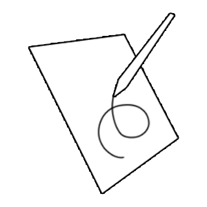
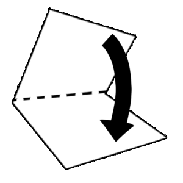
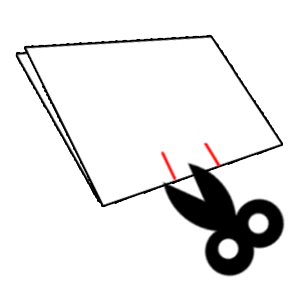
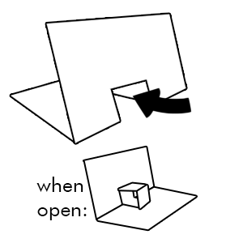
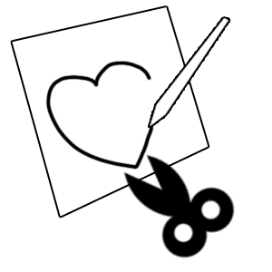
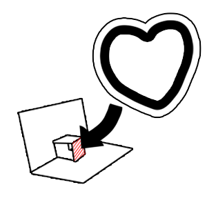
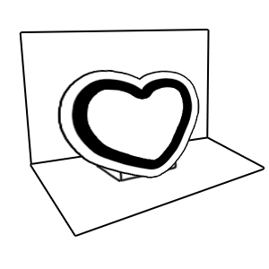
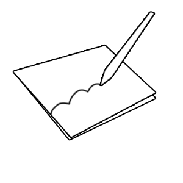
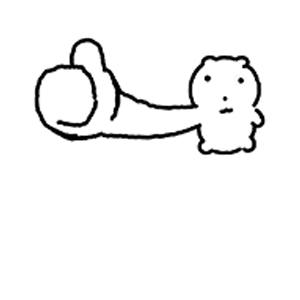

On a sheet of paper, freely draw the background that will be visible when the pop-up card is opened. If you'd prefer a plain background, feel free to skip this step.

Fold the paper in half with the drawing facing inward to create the card base. Press firmly along the crease with your fingernail or a ruler so it folds easily later.

Starting from the folded edge (the bottom edge), cut a straight line about 1-2 inches long, keeping the scissors perpendicular to the fold. Then, about 1 inch to the side, cut another identical line. This creates two parallel lines at the center of the fold — when their lengths line up, they form a shape like the number "11" lying on its side.

Gently push the flap that formed between the two cuts (the small rectangular section still attached to the paper) with your finger, pushing it inward toward the inside of the card. As the flap folds inward, a new crease forms along it.

Using any drawing and coloring tools you like, on the another paper, freely complete the image that will appear when the card opens. Then cut along its outline.

Apply glue to the back of the cut-out image and attach it to the flap you made in the previous step. The folded flap will be divided into two rectangles — be careful to glue the image onto only one of them.

Once the glue has dried, carefully close and reopen the card. The shape should now pop up in three dimensions along with the card, completing the pop-up structure.

Decorate the outside of the card however you like before opening it. As with the previous step, feel free to skip this if you'd prefer a plain look.
